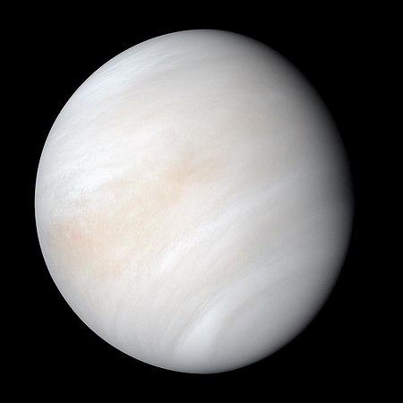
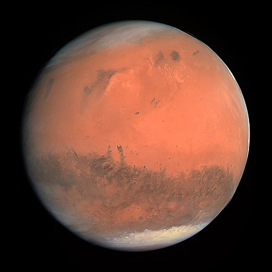
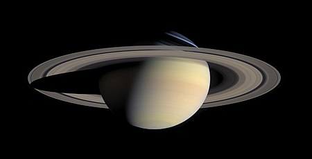
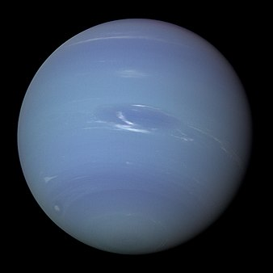

Güneş Sistemi
Ana Sayfa
Gezegenler
Hakkımızda
Gezegenler

- Merkür
- Adını Roma tanrısı Merkür’den almaktadır.
- Güneş’e en yakın gezegendir.
- Güneş Sistemi’ndeki en küçük gezegendir.
- Uydusu yoktur.
- Venüs
- Güneşe en yakın ikinci gezegendir.
- Gelen güneş ışınını bırakmamasından dolayı En sıcak gezegen gezegendir.
- Adını Roma tanrıçası Venüs’ten almıştır.
- Dünya ile yaklaşık aynı büyüklüktedir.

- Dünya
- Güneşe en yakın üçüncü gezegendir.
- Uzaydan mavi renkte görünür.
- Dünyamız atmosferinde % 78 azot, % 21 oksijen ve %01 diğer gazlar bulunur.
- Dünyamız bir günde 23 saat 56 dk. 4 sn. kendi etrafındaki dönüşünü tamamlar.
- Mars
- Güneşe en yakın dördüncü gezegendir.
- Roma savaş tanrıçası Mars’dan almıştır adını.
- üzerindeki demir oksitten dolayı kızılımsı bir rengi vardır bu yüzden Kızıl Gezegen de denir.
- İki adet uydusu bulunmaktadır.(Phobos ve Deimos)

- Jüpiter
- Güneşe en yakın beşinci gezegendir.
- Roma mitolojisindeki en büyük tanrı olan Jüpiter’den almıştır.
- Büyük bir hidrojen ve helyum bulunmaktadır.
- Güneş ışığının büyük bir bölümünü yansıtmaktadır.
- Satürn
- Güneşe en yakın altıncı gezegendir.
- Güneş etrafındaki dönüşünü yaklaşık 30 yılda tamamlamaktadır.
- Gezegenin ortalama sıcaklığı -180 ºC dir.
- Satürn’ü diğer gezegenlerden ayırt edici en büyük özelliği buz ve taşlardan oluşan

- Uranüs
- Güneşe en yakın yedinci gezegendir.
- Güneş etrafındaki dönüşünü 84 yılda tamamlamaktadır.
- Kendi etrafında dönüşünü 11 saatte tamamlamaktadır.
- Gezegenin ortalama sıcaklığı -214 ºC dir.
- Neptün
- Güneşe en yakın sekizinci gezegendir.
- Gezegenin 14 uydusu vardır.
- Neptün Gezegeninin sıcaklığı -218°C ye kadar düşmektedir.
- Güneş Sistemi’ndeki en soğuk yerlerdendir.